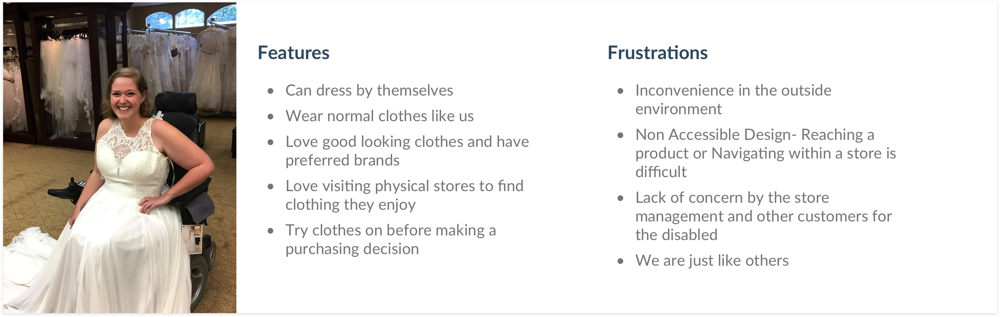
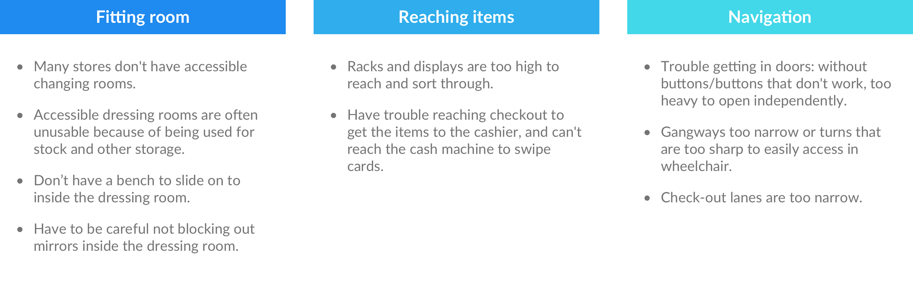
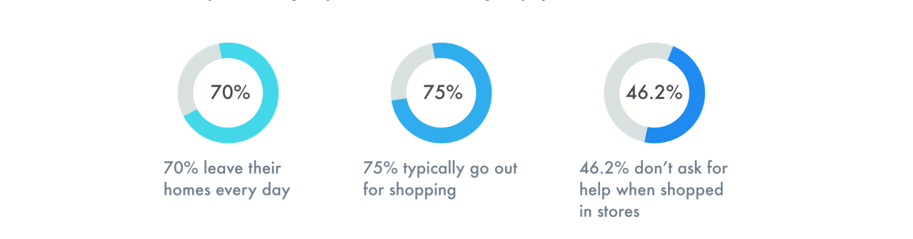
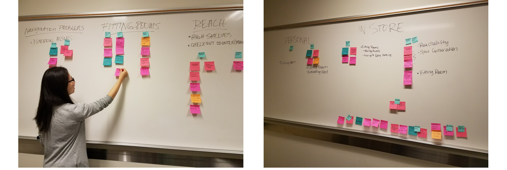
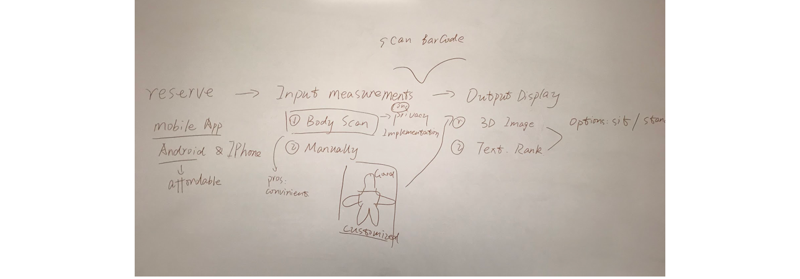

Problem
Despite the Americans with Disabilities Act (ADA), and accessibility services available at clothing stores, there are still many issues wheelchair users face when purchasing clothing in stores. We intend to address one of the issues we have come across, providing a solution to their issues that can be applied to the in-store clothes purchase environment.
Key Users
Our key users are individuals who are not able to stand or walk, and who use wheelchairs in their daily lives. They are independent just like the rest of us. They are adults across a wide range of ages, and face issues navigating less accessible spaces and hence are looking for accessible designs implemented in most places they visit.

Problem Space
From our survey and interviews, we found people using wheelchairs facing several inconveniences while shopping for clothing in physical stores. These problem areas can be divided into three parts:

Why the system is needed?
From our survey, we found that most of the respondents leave their homes at least once a week. People said that they like the experience of physical stores, but it’s inconvenient. People even describe the physical store shopping experiences to be very exhausting and often times a hassle. Thus, there is a huge demand to solve problems they are facing while clothing shopping in physical stores, making it more accessible and general for people using wheelchairs.

Ideation
Brainstorming
Based on our understanding of wheelchair users’ shopping experience, our team worked on brainstorming multiple design ideas to explore the potential design space, to push the boundaries of design possibilities. After two rounds of brainstorm sessions, we generated more than 30 ideas.

Decision
We had two sessions to narrow down and finalize the system outline and its functionality. In the first session, we analyzed feedbacks we received from surveys, and decided on the type of interface we should focus on (mobile, website, interactive display etc.). In the second session, we considered feasibility, effectiveness, cost, and creativity of our ideas, and the concerns our user group perceived. We chose the idea that was most preferred by our user group and combined it with some functionalities of the other design ideas we had, to provide a more comprehensive impact on the problem spaces.

The two main features of FittingEasy come from the design directions generated based on the problem space. They are helping wheelchair users to reserve the fitting room and pre-ordering of clothes through app or ordering clothes in-store.
Design
Design Guidelines
We determined the following design criteria to guide our design process and final evaluation.
- Learnability: How easy it is to learn for novice users.
- Efficiency: How efficient it is for users to perform specific tasks.
- Error: How many errors users make when performing tasks, and how severe they are.
- Satisfaction: How satisfied users feel about it.
Storyboard
Display concrete model repositories of a student's account, including models the student created, models the student contributed to, and models the student liked.

Prototype
Having determined our final design concept, we built wireframes to specify our design. And eventually we designed the prototype FittingEasy which supports wheelchair users in the following steps.
- Sign up and enter measurements. Users can change their measurements anytime in the profile page.
- Reserve a fitting room. Users can check reservation details in the home page.
- Scan barcode to check if the item fits. This featured function reduces try-on time.
- Wait for the fitting room to be prepared. FittingEasy will provide details about preparation process. Users can also check the remaining time.
Evaluation
In usability testing, we employed the standard SUS scale, measured the time taken by users to perform the tasks as well as the errors they make on each task. Apart from this, we also asked users open ended questions to find out the user’s impressions and opinions about our prototype.
Expert Evaluation: Our expert evaluation was on the final presentation of the course. More than 20 experts made their comments on the design. We asked them to evaluate our design by referring to some common heuristics with a focus on usability, understandability, learnability of the system.
User Testing: We completed a total of four usability testing sessions. As the participant performed their task, they were asked to think aloud, and the note-taker would take notes. The moderator and the note-taker would measure the time taken to complete the task, and also the errors made by the participant, and their body language to take notes and make interpretations. Once the users completed their tasks, we asked several follow-up questions. Then they rated our design through the questionnaire based on SUS.
What to change
Based on the results of evaluation and discussion, we have listed several points about potential improvements.
- Cut off the unnecessary parts of measurements to reduce the burden on users, conduct research on necessities of each body measurements for shopping.
- Use dynamic images (e.g., GIF) as the measurement instruction images instead of static ones, users would more clearly understand how to measure their bodies.
- There should be a measurement service set up in store, offering assistance and tools for users to measure their bodies.
- Adjust timeslots for reserving fitting rooms, conduct research about average time that users spend in fitting rooms.
- Our design should also have a major function of online shopping, users can choose items and reserve fitting rooms at home before their visits to physical stores.
- Add instructions to familiarize novice users with our app, let them know how our app works.